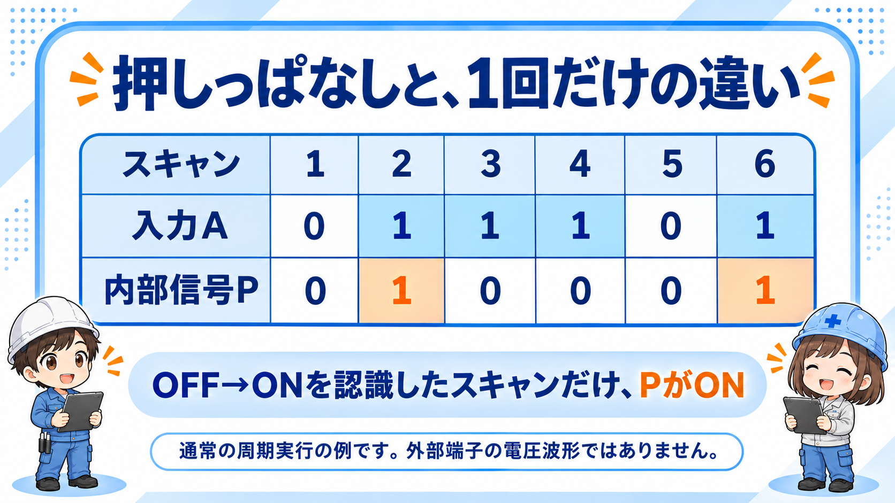
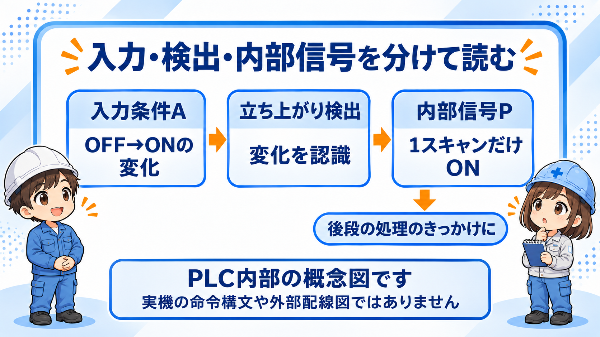

ワンショット回路とは？「変わったときだけ」の信号を作る回路
ワンショット回路は、ある条件の変化をきっかけに、短い信号を1回作る回路です。この記事ではPLCの基本として、OFFからONへの変化を検出し、内部信号を1スキャンだけONにする考え方を扱います。
押しボタンを押し続ける時間と、処理を始めるきっかけは別です。通常の接点はONの状態を読むのに対し、立ち上がりのワンショットはONになった変化を読みます。

「1スキャン」と「一定時間」は別
1スキャンはPLCの繰り返し処理の1巡です。長さは機種や処理内容などに左右され、必ず何ミリ秒とは決まりません。「0.5秒だけON」のような時間指定が必要なら、タイマーなどを含む別の回路設計になります。
ワンショットには、ONからOFFへの変化で作るものや、決めた時間だけ信号を出す回路もあります。まずは何の変化を、どれだけの長さの信号にするかを分けて考えましょう。
動作の流れ：押しっぱなしでは繰り返さない
次は、同じ回路を毎スキャン実行し、初めは入力がOFFだった場合の例です。1はON、0はOFFを表します。
| 確認するスキャン | 1 | 2 | 3 | 4 | 5 | 6 |
|---|---|---|---|---|---|---|
| 入力A | 0 | 1 | 1 | 1 | 0 | 1 |
| 立ち上がりの内部信号P | 0 | 1 | 0 | 0 | 0 | 1 |
OFF → ONで検出
2回目のスキャンで入力の変化を認識し、内部信号PをONにします。
ONの継続では繰り返さない
入力がONのままでも、Pは次のスキャンではOFFです。
OFFを経て次の変化へ
回路がOFFを認識した後、再びONを認識すると、もう一度PがONになります。
立ち下がりは別の変化
ON → OFFを検出する場合は、立ち下がり用の命令や回路を使います。
この表は周期的な通常実行の説明です。RUN開始時に既に入力がONの場合や、回路を途中で実行・停止する場合の扱いは、使用機種と命令の仕様を確認します。
回路を読むための概念図：まず内部信号までを読む
入力条件Aの立ち上がりから内部信号Pを作り、そのPを後段の処理のきっかけにする、という順番で読みます。A・Pは説明用の名前で、実機にそのまま書き込むプログラムではありません。

| 見る場所 | 役割 | 確認すること |
|---|---|---|
| 入力条件A | 何の変化を見るか | スイッチ単独か、複数条件を組み合わせた結果か |
| 立ち上がり検出 | OFF → ONを検出する | 命令の実行条件、対応CPU、初回実行時の扱い |
| 内部信号P | 後段へきっかけを渡す | 利用する処理と実行順序、別の場所からの書き換えの有無 |
命令名はメーカー・シリーズごとに確認
三菱電機の例には立ち上がりのPLS、立ち下がりのPLFがあり、オムロンの例にはDIFU・DIFDがあります。同じソフトで名前を置き換えれば使える、という意味ではありません。GX Works3を使う場合も、対象CPUに対応したマニュアルで命令とデバイスを確認します。
オムロンでも、内部ビットを使うDIFUと、後続命令の実行条件を変えるUPでは役割が異なります。見た目の記号だけでなく、何を1回にしている命令なのかを読みましょう。
使いどころは「1回だけ受け付けたい処理」
- 押しボタンの操作を、内部の処理開始のきっかけにする
- 条件が成立したとき、値の転送などを1回だけ実行する
- 状態の変化を、通知や記録のきっかけとして扱う
大切なのは、後段の命令が「ONの間、毎スキャン実行する」のか、「立ち上がりで1回動く」のかを確認することです。カウンタには命令自体が立ち上がりを数えるものもあり、すべてにワンショットを追加するわけではありません。
きっかけと、動作を続ける条件を分ける
ワンショットの内部信号は短くても、それを受けた後段の処理が続くことはあります。動作の継続・停止は、自己保持や解除条件など後段の設計の役割です。ワンショットだけで運転の保持や安全な停止を実現できる、と考えないでください。
「出ない・多く出る」ときに確認するポイント
入力の変化を認識できているか
短すぎる入力は、通常の入力取り込みで見逃す場合があります。ワンショットは取り込めなかった変化を復元する機能ではありません。
OFFへ戻ったことも認識したか
ONが続いているだけでは再検出しません。再び検出するには、回路がOFFと、その後のONを認識できる必要があります。
実行条件・実行順序はどうか
条件付き実行、サブルーチン、RUN開始時などは通常の連続実行と分けて、対象命令の注意事項を確認します。
入力が何度も変化していないか
接点のばたつきやノイズを複数の変化として取り込むと、繰り返し検出する可能性があります。ワンショット自体はチャタリング除去ではありません。
内部の1スキャン信号を、そのまま外部機器用と考えない
外部のリレーや機器へ伝えるときは、入出力ユニットの更新タイミングや出力方式の応答、相手機器が受け取れる信号幅も関係します。内部信号がONになったことだけで、実機が確実に動いたとは判断できません。実設備の変更・試運転は担当者の管理下で、メーカー資料と現場の安全手順を優先してください。
よくある疑問
ワンショットは何秒ですか？
この記事のPLC内部信号の例は1スキャンです。秒数を指定する回路とは区別します。
押しっぱなしでも、もう一度信号が出ますか？
通常の連続実行では出ません。OFFを認識してから次のONを認識すると再び出ます。初回実行や特殊な実行条件は機種の仕様を確認してください。
メーカー資料で確認するところ
公式資料確認日：
命令の働きは三菱電機「ワンショット回路」、オムロンの1スキャン信号の説明とUPとDIFUの違いが参考になります。時間と外部I/Oの関係はPLCの用語解説、命令固有の制約はCP1E命令リファレンス（英語PDF）など、実際に使用するCPUに対応した最新版の資料で確認してください。
関連記事
ワンショット回路は、タイマー・カウンタ・自己保持・インターロックと組み合わせて使うと理解しやすくなります。